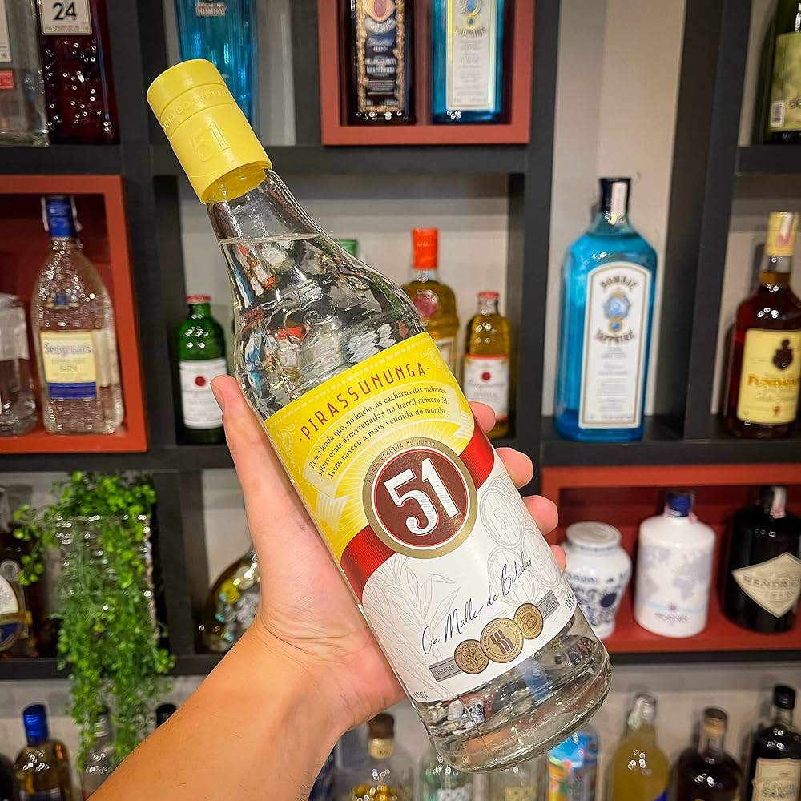

Em A 51 Seleção foi elaborada a partir de um blend super especial que reuniu a tradicional
Cachaça 51 com uma Seleção de Cachaças envelhecidas em barris de carvalho por diferentes
períodos. São lotes que foram cuidadosamente armazenados em um local de acesso restrito
e em condições térmicas ideais para resultar em um produto de sabor suave e levemente
amadeirado.
Cachaça armazenada em barris de carvalho, de coloração amarelada e brilhante. Sabor rico,
equilibrado, suave e com notas florais, de baunilha e caramelo. Aroma amadeirado sutil
e agradável.
Graduação Alcoólica 38%.
Contém 965ml.
Cachaça Nacional.
